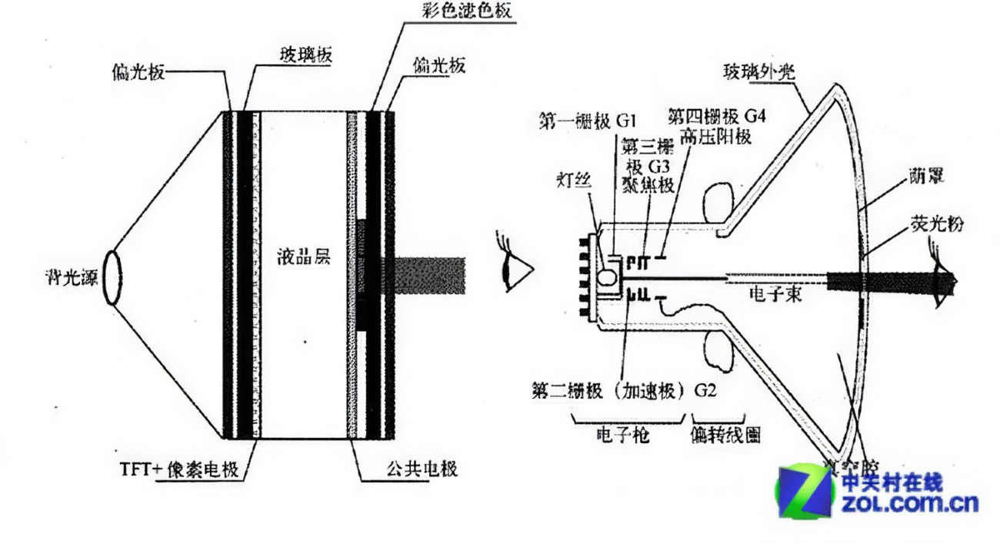
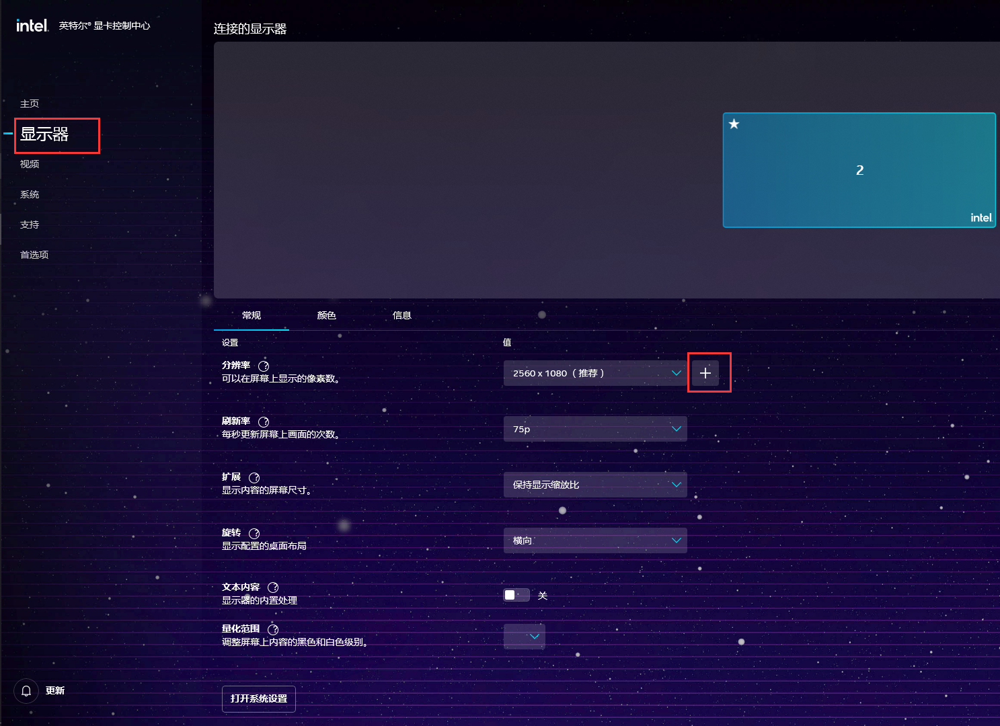
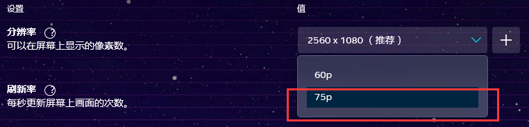
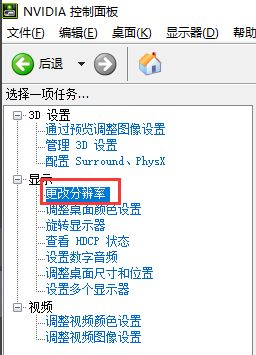
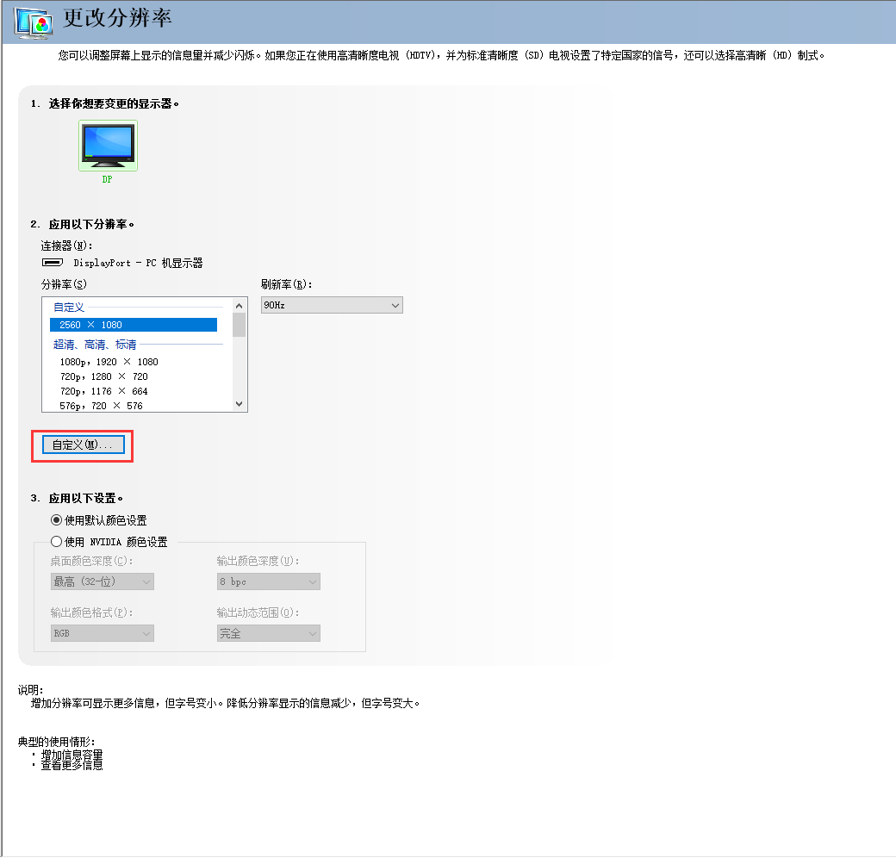
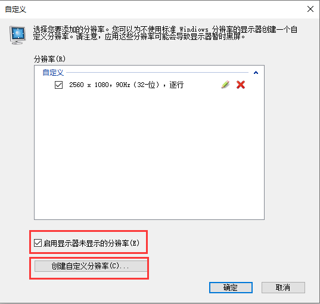
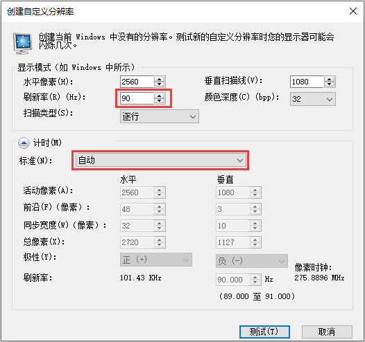

# 前言
显示器超频？显示器还能超频？
当然是可以的。从定义上来说，任何以时钟频率进行周期性工作的硬件都有超频的说法，只不过我们平时主要讨论的是 CPU、显卡、内存等核心电脑硬件的超频。
某种意义上来说，显示器超频实际上是一个很古老的话题。在以前的 “大屁股” 显示器（即 CRT 技术的显示器）时代，超频就已经存在了。由于最开始的显示器都是纯模拟信号，输入的电压经过放大后直接作用于偏转电场，从而实现画面绘制，那时候的显示器超频是真正意义上的物理超频。只要阴极射线管的水平够好、电场板的素质优秀，显示器的各项工作参数完全可以自定义。
后来用了 LCD 和纯数字信号传输，超频的内容发生了一些变化；不过多数面板仍然会有超频能力，这取决于厂家的配置与面板本身的素质。

图：LCD 与 CRT 显示器原理对比
# 什么是显示器超频
所谓的显示器超频，实际上是针对其运行参数垂直刷新率而言的。
在以前的 CRT 显示器上，显示画面需要电子枪从左往右依次发射电子、扫描一行，点亮一行的荧光像素，随后在垂直同步信号的作用下迅速回到左侧，同时跳转到下一行，重新进行下一行的扫描。以此类推，直到整个荧幕被扫描完成后，电场会使电子偏转到左上角，重复这个过程。（此处还有水平同步信号在起作用，不详细说明）
玩过模拟示波器的朋友肯定能理解垂直信号的作用，实际上就是示波器中的扫描电路，选择合适的扫描信号就能使波形稳定。
因此，如果能调节垂直（和水平）同步信号，使其可以在更短的时间内完成一次完整的扫描，则显示器的刷新率就能得到提升。
这就是显示器超频，我们希望提升其垂直刷新率，使其比标称值更高，这样才会有更好的体验。
# 显示器超频的影响因素
要完成一次好的显示器超频，我们通常认为有以下几点因素会影响结果。
- 面板类型与素质
- 厂商限制
- 接口类型与传输质量
- 合适的配置
- 其它因素
以上因素中，面板和厂商在购买后就固定了，无法更改。
接口类型以 DP、HDMI（高版本）为优。
请不要将显示器的超频能力纳入选购的考虑范围之中，如果想获得高刷屏的体验，那么建议选购原生的高刷显示器。本文的核心目的是科普，而不是鼓励大家要求厂商提供超频能力。
# 如何超频
# 超频前的准备
- 检查接口协议与传输质量
请使用优质 DP 或 HDMI 线连接电脑与显示器，以获得更佳的超频能力。
该项主要影响传输带宽，对于特定版本的 DP 或 HDMI 接口而言，其能提供的带宽是有限的。详情可查阅百度。
只需要记得一点，如果带宽受限，那么降低分辨率有助于获得更高的刷新率。但是对于多数平民显示器而言，即使使用最高分辨率，也不太会出现带宽不足的问题。 - 检查视频信号源
目前来说，英特尔核心显卡并不支持显示器超频（至少笔记本的不行）。如果您使用台式机，请确保视频信号是独立显卡输出的。如果使用笔记本，请连接到笔记本上的 type-c 接口，一般而言这个接口的显示输出是直接连接独立显卡的。
如果使用不支持独显直连输出的笔记本（或者没有独显），则大概率不能成功。
不过，即便如此，您还是可以进行尝试。大多数出厂 60Hz 的显示器都可以直接提升到 75Hz，带来一定程度上的体验提升。不过有一个例外，笔记本自带的屏幕完全不支持超频。 - 环境条件
尽管现代显示器对工作环境的承受范围极大，环境因素的影响极其小，合适的环境仍然有助于提高超频成功率。
主要包括合适的工作温度（尤其是不能过低），湿度，电压值与稳定性，甚至摆放方向等。
# 开始超频
- 对于非独立显卡、英特尔核心显卡：
请进入显卡控制面板（以下以新版英特尔核心显卡为例）
点击显示器，分辨率旁边的加号

检查是否有刷新率的选项。如果有，可以尝试输入目标刷新率，然后单击确定。
若不成功或没有输入刷新率的地方，则您的显卡不支持硬超频。
请尝试点击刷新率旁的下拉框

若有多个选项，选择最高的。若有 I 和 P 两种，请选择 P。
至此，显示器超频结束。
- 对于英伟达、AMD 独立显卡：
请进入显卡控制面板（以下以英伟达显卡为例）；应该能在 [开始] 菜单里找到。
若电脑里找不到该软件，请重装显卡驱动程序。
在屏幕左侧，单击 [更改分辨率]。
如果没有此选项，则说明显示器没有连接到独立显卡上。

点击 [自定义]。

勾选 [启用显示器未显示的分辨率]，然后点击 [创建自定义分辨率]。

在 [刷新率] 中输入目标刷新率，然后可以点击 [测试] 按钮进行测试。
在 [计时 - 标准] 选项中选择 [协同视频计时标准（CVT）降低清屏时间]，可能有助于提高成功率。

单击 [测试] 按钮，显示器将黑屏进行切换。
如果成功，则您将很快看到电脑画面。如果半成功，则可能会看到画面上出现抖动、条纹、异常颜色等。
如果失败，显示器提示不支持或一直黑屏，等待 15s 后会自动退出测试状态。或者，可以按 Esc 键快速返回。
当测试到稳定的刷新率后，在提示框中点击 [是]，即可保存该分辨率。
返回上一步的 [更改刷新率]，应该能在列表最顶上看到刚刚创建的分辨率。
选中后，单击软件右下角的 [应用]，超频结束。
# 超频提示
- 尽管超频一般不会造成伤害，仍可能导致面板发热加剧、液晶老化速率提高等问题。因此，从理论上讲，不建议长时间超频。
- 在超频过程中，可以使用以下方法先确定显示器能承受的最大刷新率：
- 先将刷新率定到目标值
- 若成功，则进一步定到下个目标值；否则，应选择当前刷新率与目标值的中间值。
- 重复以上取中值的过程，通过二分法可以快速定位到最大刷新率。
- 确定了最大值后，请适当降低到附近合适的数值使用。例如，若最大刷新率为 96Hz，请保持在 90Hz 即可。
- 若超频过程中显示器出现严重事故（如一直黑屏、闪屏等），请断开视频连接线，然后断开显示器电源；等待几分钟或使其完全放电后重新接入电源，检查显示器是否能正常开机，然后再接入电脑。由于现代显示器的保护功能极佳，真正发生无法挽回事故的可能性极低，近乎不存在，但并不为 0。
# 超频经验
对于一般的 1080P、60Hz 显示器而言，75Hz 是日常使用的较佳水平。某些素质较高的显示器可能会一路支持到 80、90 甚至 110Hz，全看厂商良心与运气。
对于 2K、60Hz 的显示器，一般也可以使用 75Hz。我自己的 2K60 显示器最大支持 98Hz，稳定值是 96Hz，最终保持在 90Hz 使用。
对于 144Hz 的显示器，一般直接上 165Hz 是没有问题的。较好的面板可以尝试 180Hz。
更高的不知道，我没钱（
# 总结
没啥可总结的，超个频，获得更好的体验和更高的风险，这是一种交易。权衡结果全由你自己掌控。
任何问题欢迎留言！